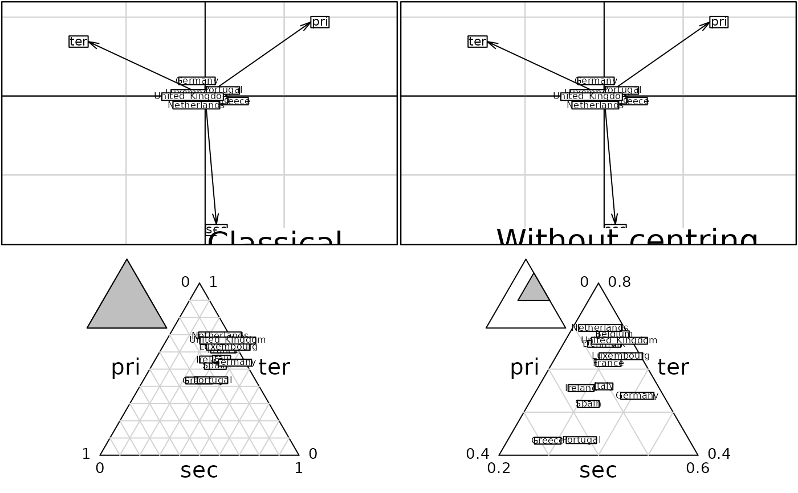

Projections of Supplementary Rows
suprow.RdThis function performs a projection of supplementary rows (i.e. supplementary individuals).
Usage
# S3 method for class 'coa'
suprow(x, Xsup, ...)
# S3 method for class 'dudi'
suprow(x, Xsup, ...)
# S3 method for class 'dudi'
predict(object, newdata, ...)
# S3 method for class 'pca'
suprow(x, Xsup, ...)
# S3 method for class 'acm'
suprow(x, Xsup, ...)
# S3 method for class 'mix'
suprow(x, Xsup, ...)
# S3 method for class 'fca'
suprow(x, Xsup, ...)Details
If suprow.dudi is used, the column vectors of Xsup are projected without prior modifications onto the principal components of dudi with the scalar product associated to the row weightings of dudi.
Value
predict returns a data frame containing the coordinates of the supplementary rows. suprow returns a list with the transformed table Xsup in tabsup and the coordinates of the supplementary rows in lisup.
References
Gower, J. C. (1967) Multivariate analysis and multivariate geometry. The statistician, 17, 13–28.
Author
Daniel Chessel
Anne-Béatrice Dufour anne-beatrice.dufour@univ-lyon1.fr
Examples
data(euro123)
par(mfrow = c(2, 2))
w <- euro123[[2]]
dudi1 <- dudi.pca(w, scal = FALSE, scan = FALSE)
if(adegraphicsLoaded()) {
g11 <- s.arrow(dudi1$c1, psub.text = "Classical", psub.posi = "bottomright", plot = FALSE)
g12 <- s.label(suprow(dudi1, w)$tabsup, plab.cex = 0.75, plot = FALSE)
g1 <- superpose(g11, g12)
g21 <- s.arrow(dudi1$c1, psub.text = "Without centring", psub.posi = "bottomright", plot = FALSE)
g22 <- s.label(suprow(dudi1, w)$tabsup, plab.cex = 0.75, plot = FALSE)
g2 <- superpose(g21, g22)
g3 <- triangle.label(w, plab.cex = 0.75, label = row.names(w), adjust = FALSE, plot = FALSE)
g4 <- triangle.label(w, plab.cex = 0.75, label = row.names(w), adjust = TRUE, plot = FALSE)
G <- ADEgS(list(g1, g2, g3, g4), layout = c(2, 2))
} else {
s.arrow(dudi1$c1, sub = "Classical", possub = "bottomright", csub = 2.5)
s.label(suprow(dudi1, w), add.plot = TRUE, clab = 0.75)
s.arrow(dudi1$c1, sub = "Without centring", possub = "bottomright", csub = 2.5)
s.label(suprow(dudi1, w), clab = 0.75, add.plot = TRUE)
triangle.plot(w, clab = 0.75, label = row.names(w), scal = FALSE)
triangle.plot(w, clab = 0.75, label = row.names(w), scal = TRUE)
}

data(rpjdl)
rpjdl.coa <- dudi.coa(rpjdl$fau, scann = FALSE, nf = 4)
rpjdl.coa$li[1:3, ]
#> Axis1 Axis2 Axis3 Axis4
#> 1 1.449656 -1.59644004 -1.2912481 -2.0346309
#> 2 1.308057 -1.56619615 -1.2428411 -1.6905682
#> 3 1.042200 0.00201931 -0.2788701 -0.1574388
suprow(rpjdl.coa,rpjdl$fau[1:3, ])$lisup #the same
#> Axis1 Axis2 Axis3 Axis4
#> 1 1.449656 -1.59644004 -1.2912481 -2.0346309
#> 2 1.308057 -1.56619615 -1.2428411 -1.6905682
#> 3 1.042200 0.00201931 -0.2788701 -0.1574388
data(deug)
deug.dudi <- dudi.pca(df = deug$tab, center = deug$cent, scale = FALSE, scannf = FALSE)
suprow(deug.dudi, deug$tab[1:3, ])$lisup #the supplementary individuals are centered
#> Axis1 Axis2
#> 1 14.86352 -12.399345
#> 2 16.49579 8.738351
#> 3 21.97732 9.038219
deug.dudi$li[1:3, ] # the same
#> Axis1 Axis2
#> 1 14.86352 -12.399345
#> 2 16.49579 8.738351
#> 3 21.97732 9.038219